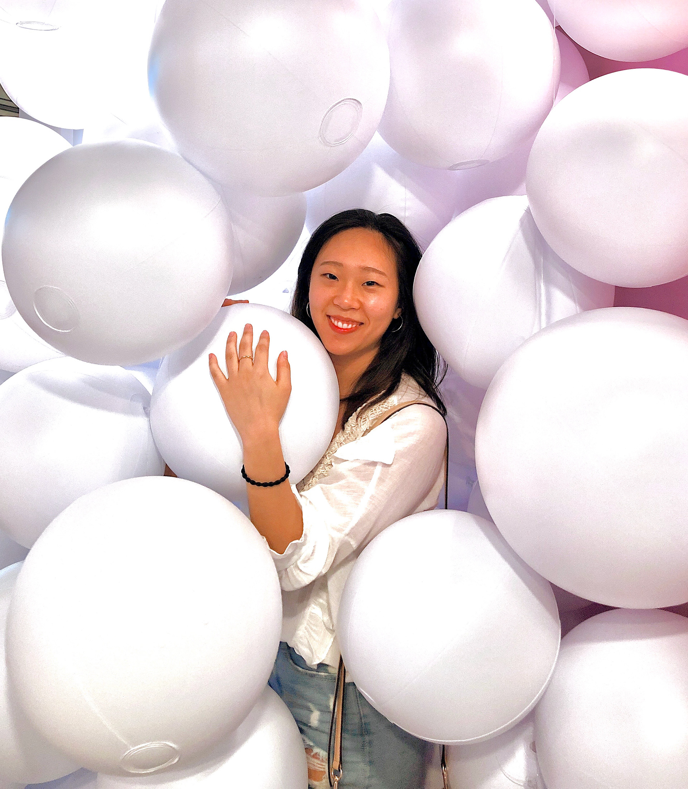

As an undergraduate student, I had a passion for learning about how cultural values impacted political laws and sanctions. Growing up Korean American in Singapore, my entire life has been a concoction of different customs, which is why I had decided to pursue a degree in International Studies. My experiences in undergrad led to my decision to intern at Synic Solutions in the Summer of 2019 where I was able to gain a profound understanding in the detailed mechanics from the R&D of a chip to the interactive relations technology has with its users. I believe my multi-cultural and academic background is the perfect opportunity to explore various design methods and empathize with users from diverse continents.